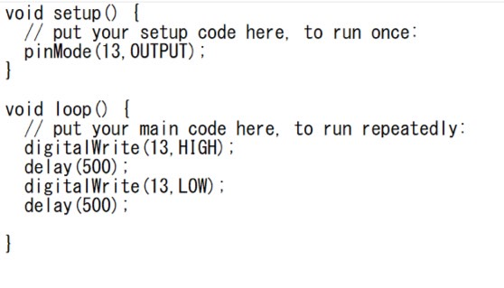
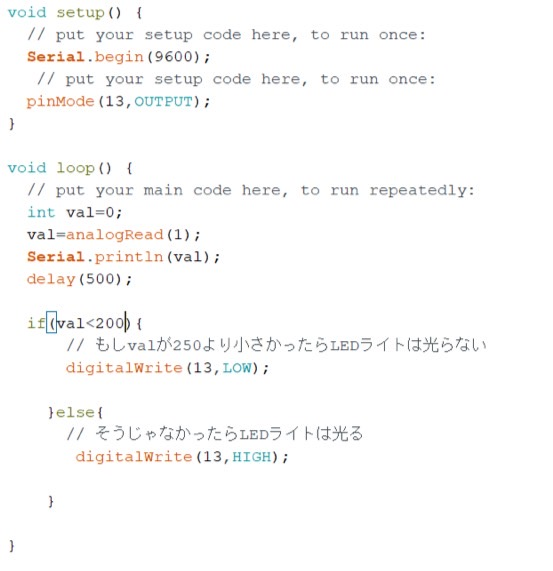

≪Arduinoを使ってLEDライトを光らせる≫
１．LEDライトの＋(長い方)を１３番のピンに繋ぐ。
２．LEDライトの－(短い方)をGNDに繋ぐ。
３．Arduino IDEにプログラムを書き込み、Arduinoに送る。
４．LEDライトが光る！
〖プログラムコード〗

≪Arduinoを使ってセンサー(CdSで明るさを測定する≫
Arduinoの５Vー１０ｋΩの抵抗ーCdSセルーArduinoのGNDの流れができるように配線する
〖プログラムコード〗

新しい服を買った、またはその服を初めて着るとき→楽しい・嬉しい
好きなことをしているとき→幸せ・癒し
友達と遊ぶとき→楽しい
晴れているとき→明るい気分
友達と喧嘩化したとき→怒り・悲しい・不安
親に怒られたとき→イライラ
何もうまくいかないとき→焦り・不安